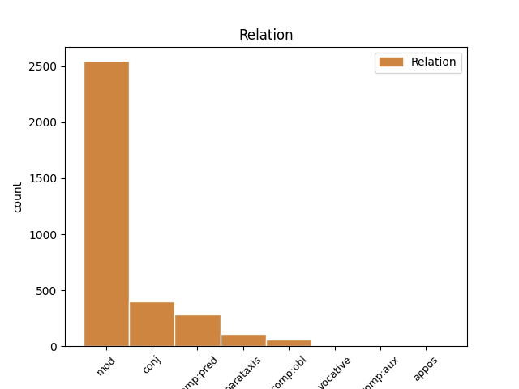
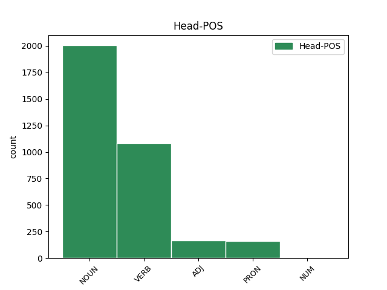
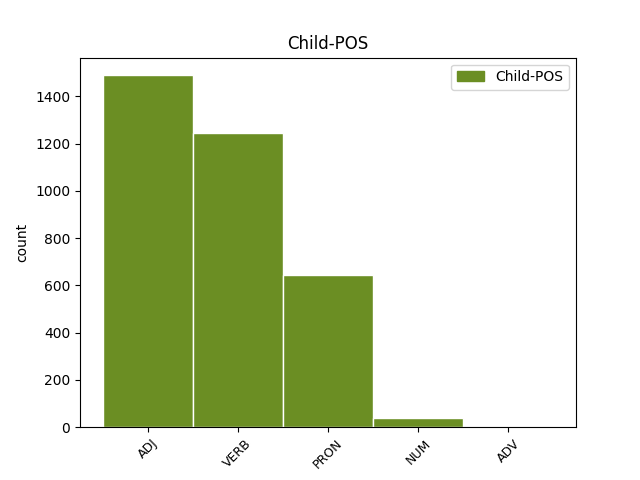

Distribution of features within this leaf



Agreement Rules sorted by frequency.
- When the dependent token is the modifer(mod) of the head token, and the head token is NOUN and the dependent token is ADJ.
1 Neque _ _ _ _ 0 _ _ _
2 enim _ _ _ _ 0 _ _ _
3 ante _ _ _ _ 0 _ _ _
4 dehiscent _ _ _ _ 0 _ _ _
5 attonitae _ _ _ _ 0 _ _ _
6 magna magnus ADJ a-p---nn- Case=Nom|Gender=Neut|Number=Plur 7 mod _ LId=magnus1
7 ora os NOUN n-p---nn- Case=Nom|Gender=Neut|Number=Plur 0 _ _ _
8 domus _ _ _ _ 0 _ _ _
9 . _ _ _ _ 0 _ _ _
10 ' _ _ _ _ 0 _ _ _
1 ' _ _ _ _ 0 _ _ _
2 Non _ _ _ _ 0 _ _ _
3 hoc _ _ _ _ 0 _ _ _
4 ista iste PRON p-p---na- Case=Acc|Gender=Neut|Number=Plur 7 mod _ LId=iste1
5 sibi _ _ _ _ 0 _ _ _
6 tempus _ _ _ _ 0 _ _ _
7 spectacula spectaculum NOUN n-p---na- Case=Acc|Gender=Neut|Number=Plur 0 _ _ _
8 poscit _ _ _ _ 0 _ _ _
9 ; _ _ _ _ 0 _ _ _
1 Neque _ _ _ _ 0 _ _ _
2 enim _ _ _ _ 0 _ _ _
3 ante _ _ _ _ 0 _ _ _
4 dehiscent _ _ _ _ 0 _ _ _
5 attonitae attono VERB v-srppfg- Aspect=Perf|Case=Gen|Gender=Fem|Number=Sing|Tense=Past|VerbForm=Part|Voice=Pass 8 mod _ _
6 magna _ _ _ _ 0 _ _ _
7 ora _ _ _ _ 0 _ _ _
8 domus domus NOUN n-s---fg- Case=Gen|Gender=Fem|Number=Sing 0 _ _ _
9 . _ _ _ _ 0 _ _ _
10 ' _ _ _ _ 0 _ _ _
1 nam _ _ _ _ 0 _ _ _
2 strenuissumus _ _ _ _ 0 _ _ _
3 quisque _ _ _ _ 0 _ _ _
4 aut _ _ _ _ 0 _ _ _
5 occiderat occido VERB v3slia--- Mood=Ind|Number=Sing|Person=3|Tense=Pqp|VerbForm=Fin|Voice=Act 0 _ _ _
6 in _ _ _ _ 0 _ _ _
7 proelio _ _ _ _ 0 _ _ _
8 aut _ _ _ _ 0 _ _ _
9 graviter _ _ _ _ 0 _ _ _
10 volneratus _ _ _ _ 0 _ _ _
11 discesserat discedo VERB v3slia--- Mood=Ind|Number=Sing|Person=3|Tense=Pqp|VerbForm=Fin|Voice=Act 5 conj _ LId=discedo1|SpaceAfter=No
12 . _ _ _ _ 0 _ _ _
1 Et _ _ _ _ 0 _ _ _
2 talia _ _ _ _ 0 _ _ _
3 fata for VERB v-srpdfn- Aspect=Perf|Case=Nom|Gender=Fem|Number=Sing|Tense=Past|VerbForm=Part|Voice=Act 4 mod _ LId=for1
4 conticuit conticesco VERB v3sria--- Aspect=Perf|Mood=Ind|Number=Sing|Person=3|Tense=Past|VerbForm=Fin|Voice=Act 0 _ _ _
5 . _ _ _ _ 0 _ _ _
1 Catilina _ _ _ _ 0 _ _ _
2 postquam _ _ _ _ 0 _ _ _
3 fusas _ _ _ _ 0 _ _ _
4 copias _ _ _ _ 0 _ _ _
5 que _ _ _ _ 0 _ _ _
6 se _ _ _ _ 0 _ _ _
7 cum _ _ _ _ 0 _ _ _
8 paucis _ _ _ _ 0 _ _ _
9 relictum _ _ _ _ 0 _ _ _
10 videt _ _ _ _ 0 _ _ _
11 , _ _ _ _ 0 _ _ _
12 memor memor ADJ a-s---mn- Case=Nom|Gender=Masc|Number=Sing 21 comp:pred _ LId=memor1
13 generis _ _ _ _ 0 _ _ _
14 atque _ _ _ _ 0 _ _ _
15 pristinae _ _ _ _ 0 _ _ _
16 suae _ _ _ _ 0 _ _ _
17 dignitatis _ _ _ _ 0 _ _ _
18 in _ _ _ _ 0 _ _ _
19 confertissumos _ _ _ _ 0 _ _ _
20 hostis _ _ _ _ 0 _ _ _
21 incurrit incurro VERB v3spia--- Mood=Ind|Number=Sing|Person=3|Tense=Pres|VerbForm=Fin|Voice=Act 0 _ _ _
22 que _ _ _ _ 0 _ _ _
23 ibi _ _ _ _ 0 _ _ _
24 pugnans _ _ _ _ 0 _ _ _
25 confoditur _ _ _ _ 0 _ _ _
26 . _ _ _ _ 0 _ _ _
1 ipse _ _ _ _ 0 _ _ _
2 equo _ _ _ _ 0 _ _ _
3 circumiens _ _ _ _ 0 _ _ _
4 unum _ _ _ _ 0 _ _ _
5 quemque _ _ _ _ 0 _ _ _
6 nominans _ _ _ _ 0 _ _ _
7 appellat appello VERB v3spia--- Mood=Ind|Number=Sing|Person=3|Tense=Pres|VerbForm=Fin|Voice=Act 0 _ _ _
8 , _ _ _ _ 0 _ _ _
9 hortatur _ _ _ _ 0 _ _ _
10 , _ _ _ _ 0 _ _ _
11 rogat rogo VERB v3spia--- Mood=Ind|Number=Sing|Person=3|Tense=Pres|VerbForm=Fin|Voice=Act 7 parataxis _ LId=rogo1|SpaceAfter=No
12 , _ _ _ _ 0 _ _ _
13 ut _ _ _ _ 0 _ _ _
14 meminerint _ _ _ _ 0 _ _ _
15 se _ _ _ _ 0 _ _ _
16 contra _ _ _ _ 0 _ _ _
17 latrones _ _ _ _ 0 _ _ _
18 inermis _ _ _ _ 0 _ _ _
19 pro _ _ _ _ 0 _ _ _
20 patria _ _ _ _ 0 _ _ _
21 , _ _ _ _ 0 _ _ _
22 pro _ _ _ _ 0 _ _ _
23 liberis _ _ _ _ 0 _ _ _
24 , _ _ _ _ 0 _ _ _
25 pro _ _ _ _ 0 _ _ _
26 aris _ _ _ _ 0 _ _ _
27 atque _ _ _ _ 0 _ _ _
28 focis _ _ _ _ 0 _ _ _
29 suis _ _ _ _ 0 _ _ _
30 certare _ _ _ _ 0 _ _ _
31 . _ _ _ _ 0 _ _ _
1 nam _ _ _ _ 0 _ _ _
2 fere _ _ _ _ 0 _ _ _
3 quem _ _ _ _ 0 _ _ _
4 quisque _ _ _ _ 0 _ _ _
5 vivos _ _ _ _ 0 _ _ _
6 pugnando _ _ _ _ 0 _ _ _
7 locum _ _ _ _ 0 _ _ _
8 ceperat capio VERB v3slia--- Mood=Ind|Number=Sing|Person=3|Tense=Pqp|VerbForm=Fin|Voice=Act 10 mod _ LId=capio1|SpaceAfter=No
9 , _ _ _ _ 0 _ _ _
10 eum is PRON p-s---ma- Case=Acc|Gender=Masc|Number=Sing 0 _ _ _
11 amissa _ _ _ _ 0 _ _ _
12 anima _ _ _ _ 0 _ _ _
13 corpore _ _ _ _ 0 _ _ _
14 tegebat _ _ _ _ 0 _ _ _
15 . _ _ _ _ 0 _ _ _
1 nunc _ _ _ _ 0 _ _ _
2 grege _ _ _ _ 0 _ _ _
3 de _ _ _ _ 0 _ _ _
4 intacto _ _ _ _ 0 _ _ _
5 septem _ _ _ _ 0 _ _ _
6 mactare _ _ _ _ 0 _ _ _
7 iuvencos juvencus ADJ a-p---ma- Case=Acc|Gender=Masc|Number=Plur 0 _ _ _
8 praestiterit _ _ _ _ 0 _ _ _
9 , _ _ _ _ 0 _ _ _
10 totidem _ _ _ _ 0 _ _ _
11 lectas _ _ _ _ 0 _ _ _
12 de _ _ _ _ 0 _ _ _
13 more _ _ _ _ 0 _ _ _
14 bidentes bidens ADJ a-p---fa- Case=Acc|Gender=Fem|Number=Plur 7 conj _ LId=bidens1|SpaceAfter=No
15 . _ _ _ _ 0 _ _ _
16 ' _ _ _ _ 0 _ _ _
1 Talibus _ _ _ _ 0 _ _ _
2 adfata _ _ _ _ 0 _ _ _
3 Aenean _ _ _ _ 0 _ _ _
4 ( _ _ _ _ 0 _ _ _
5 nec _ _ _ _ 0 _ _ _
6 sacra _ _ _ _ 0 _ _ _
7 morantur moror VERB v3ppid--- Mood=Ind|Number=Plur|Person=3|Tense=Pres|VerbForm=Fin|Voice=Act 0 _ _ _
8 iussa jubeo VERB v-prppna- Aspect=Perf|Case=Acc|Gender=Neut|Number=Plur|Tense=Past|VerbForm=Part|Voice=Pass 7 comp:pred _ _
9 viri _ _ _ _ 0 _ _ _
10 ) _ _ _ _ 0 _ _ _
11 , _ _ _ _ 0 _ _ _
12 Teucros _ _ _ _ 0 _ _ _
13 vocat _ _ _ _ 0 _ _ _
14 alta _ _ _ _ 0 _ _ _
15 in _ _ _ _ 0 _ _ _
16 templa _ _ _ _ 0 _ _ _
17 sacerdos _ _ _ _ 0 _ _ _
18 . _ _ _ _ 0 _ _ _
1 idem idem PRON p-s---na- Case=Acc|Gender=Neut|Number=Sing 2 mod _ LId=idem1
2 facit facio VERB v3spia--- Mood=Ind|Number=Sing|Person=3|Tense=Pres|VerbForm=Fin|Voice=Act 0 _ _ _
3 hostium _ _ _ _ 0 _ _ _
4 exercitus _ _ _ _ 0 _ _ _
5 . _ _ _ _ 0 _ _ _
1 ' _ _ _ _ 0 _ _ _
2 Non _ _ _ _ 0 _ _ _
3 hoc _ _ _ _ 0 _ _ _
4 ista _ _ _ _ 0 _ _ _
5 sibi sui PRON p-s---md- Case=Dat|Gender=Masc|Number=Sing 8 comp:obl _ LId=sui1
6 tempus _ _ _ _ 0 _ _ _
7 spectacula _ _ _ _ 0 _ _ _
8 poscit posco VERB v3spia--- Mood=Ind|Number=Sing|Person=3|Tense=Pres|VerbForm=Fin|Voice=Act 0 _ _ _
9 ; _ _ _ _ 0 _ _ _
1 veterani veteranus ADJ a-p---mn- Case=Nom|Gender=Masc|Number=Plur 0 _ _ _
2 pristinae _ _ _ _ 0 _ _ _
3 virtutis _ _ _ _ 0 _ _ _
4 memores memor ADJ a-p---mn- Case=Nom|Gender=Masc|Number=Plur 1 mod _ LId=memor1
5 comminus _ _ _ _ 0 _ _ _
6 acriter _ _ _ _ 0 _ _ _
7 instare _ _ _ _ 0 _ _ _
8 , _ _ _ _ 0 _ _ _
9 illi _ _ _ _ 0 _ _ _
10 haud _ _ _ _ 0 _ _ _
11 timidi _ _ _ _ 0 _ _ _
12 resistunt _ _ _ _ 0 _ _ _
13 : _ _ _ _ 0 _ _ _
1 nam _ _ _ _ 0 _ _ _
2 strenuissumus strenuus ADJ a-s---mns Case=Nom|Degree=Sup|Gender=Masc|Number=Sing 3 mod _ LId=strenuus1
3 quisque quisque PRON p-s---mn- Case=Nom|Gender=Masc|Number=Sing 0 _ _ _
4 aut _ _ _ _ 0 _ _ _
5 occiderat _ _ _ _ 0 _ _ _
6 in _ _ _ _ 0 _ _ _
7 proelio _ _ _ _ 0 _ _ _
8 aut _ _ _ _ 0 _ _ _
9 graviter _ _ _ _ 0 _ _ _
10 volneratus _ _ _ _ 0 _ _ _
11 discesserat _ _ _ _ 0 _ _ _
12 . _ _ _ _ 0 _ _ _
1 una unus NUM m-s---fn- Case=Nom|Gender=Fem|Number=Sing 2 mod _ _
2 dies dies NOUN n-s---fn- Case=Nom|Gender=Fem|Number=Sing 0 _ _ _
3 omnis _ _ _ _ 0 _ _ _
4 potuit _ _ _ _ 0 _ _ _
5 praecurrere _ _ _ _ 0 _ _ _
6 amantis _ _ _ _ 0 _ _ _
7 . _ _ _ _ 0 _ _ _
1 Talibus _ _ _ _ 0 _ _ _
2 adfata _ _ _ _ 0 _ _ _
3 Aenean _ _ _ _ 0 _ _ _
4 ( _ _ _ _ 0 _ _ _
5 nec _ _ _ _ 0 _ _ _
6 sacra sacer ADJ a-p---na- Case=Acc|Gender=Neut|Number=Plur 8 mod _ LId=sacer1
7 morantur _ _ _ _ 0 _ _ _
8 iussa jubeo VERB v-prppna- Aspect=Perf|Case=Acc|Gender=Neut|Number=Plur|Tense=Past|VerbForm=Part|Voice=Pass 0 _ _ _
9 viri _ _ _ _ 0 _ _ _
10 ) _ _ _ _ 0 _ _ _
11 , _ _ _ _ 0 _ _ _
12 Teucros _ _ _ _ 0 _ _ _
13 vocat _ _ _ _ 0 _ _ _
14 alta _ _ _ _ 0 _ _ _
15 in _ _ _ _ 0 _ _ _
16 templa _ _ _ _ 0 _ _ _
17 sacerdos _ _ _ _ 0 _ _ _
18 . _ _ _ _ 0 _ _ _
1 nunc _ _ _ _ 0 _ _ _
2 grege _ _ _ _ 0 _ _ _
3 de _ _ _ _ 0 _ _ _
4 intacto _ _ _ _ 0 _ _ _
5 septem _ _ _ _ 0 _ _ _
6 mactare _ _ _ _ 0 _ _ _
7 iuvencos _ _ _ _ 0 _ _ _
8 praestiterit _ _ _ _ 0 _ _ _
9 , _ _ _ _ 0 _ _ _
10 totidem _ _ _ _ 0 _ _ _
11 lectas lego VERB v-prppfa- Aspect=Perf|Case=Acc|Gender=Fem|Number=Plur|Tense=Past|VerbForm=Part|Voice=Pass 14 mod _ LId=lego2
12 de _ _ _ _ 0 _ _ _
13 more _ _ _ _ 0 _ _ _
14 bidentes bidens ADJ a-p---fa- Case=Acc|Gender=Fem|Number=Plur 0 _ _ _
15 . _ _ _ _ 0 _ _ _
16 ' _ _ _ _ 0 _ _ _
1 quia _ _ _ _ 0 _ _ _
2 illa _ _ _ _ 0 _ _ _
3 foeda foedus ADJ a-p---nn- Case=Nom|Gender=Neut|Number=Plur 0 _ _ _
4 atque _ _ _ _ 0 _ _ _
5 intoleranda intolero VERB v-ppgpnn- Case=Nom|Gender=Neut|Number=Plur|Tense=Pres|VerbForm=Gdv|Voice=Pass 3 conj _ LId=intolero1
6 viris _ _ _ _ 0 _ _ _
7 videbantur _ _ _ _ 0 _ _ _
8 , _ _ _ _ 0 _ _ _
9 haec _ _ _ _ 0 _ _ _
10 sequi _ _ _ _ 0 _ _ _
11 decrevistis _ _ _ _ 0 _ _ _
12 . _ _ _ _ 0 _ _ _
1 Piso _ _ _ _ 0 _ _ _
2 oppugnatus _ _ _ _ 0 _ _ _
3 in _ _ _ _ 0 _ _ _
4 iudicio _ _ _ _ 0 _ _ _
5 pecuniarum _ _ _ _ 0 _ _ _
6 repetundarum _ _ _ _ 0 _ _ _
7 propter _ _ _ _ 0 _ _ _
8 quoiusdam quidam PRON p-s---mg- Case=Gen|Gender=Masc|Number=Sing 9 mod _ _
9 Transpadani Transpadanus ADJ a-s---mg- Case=Gen|Gender=Masc|Number=Sing 0 _ _ _
10 supplicium _ _ _ _ 0 _ _ _
11 iniustum _ _ _ _ 0 _ _ _
12 , _ _ _ _ 0 _ _ _
13 Catulus _ _ _ _ 0 _ _ _
14 ex _ _ _ _ 0 _ _ _
15 petitione _ _ _ _ 0 _ _ _
16 pontificatus _ _ _ _ 0 _ _ _
17 odio _ _ _ _ 0 _ _ _
18 incensus _ _ _ _ 0 _ _ _
19 , _ _ _ _ 0 _ _ _
20 quod _ _ _ _ 0 _ _ _
21 extrema _ _ _ _ 0 _ _ _
22 aetate _ _ _ _ 0 _ _ _
23 , _ _ _ _ 0 _ _ _
24 maxumis _ _ _ _ 0 _ _ _
25 honoribus _ _ _ _ 0 _ _ _
26 usus _ _ _ _ 0 _ _ _
27 , _ _ _ _ 0 _ _ _
28 ab _ _ _ _ 0 _ _ _
29 adulescentulo _ _ _ _ 0 _ _ _
30 Caesare _ _ _ _ 0 _ _ _
31 victus _ _ _ _ 0 _ _ _
32 discesserat _ _ _ _ 0 _ _ _
33 . _ _ _ _ 0 _ _ _
1 at _ _ _ _ 0 _ _ _
2 ex _ _ _ _ 0 _ _ _
3 altera _ _ _ _ 0 _ _ _
4 parte _ _ _ _ 0 _ _ _
5 C _ _ _ _ 0 _ _ _
6 . _ _ _ _ 0 _ _ _
7 Antonius Antonius NOUN n-s---mn- Case=Nom|Gender=Masc|Number=Sing 0 _ _ _
8 , _ _ _ _ 0 _ _ _
9 pedibus _ _ _ _ 0 _ _ _
10 aeger aeger ADJ a-s---mn- Case=Nom|Gender=Masc|Number=Sing 7 comp:pred _ LId=aeger1
11 quod _ _ _ _ 0 _ _ _
12 proelio _ _ _ _ 0 _ _ _
13 adesse _ _ _ _ 0 _ _ _
14 nequibat _ _ _ _ 0 _ _ _
15 , _ _ _ _ 0 _ _ _
16 M _ _ _ _ 0 _ _ _
17 . _ _ _ _ 0 _ _ _
18 Petreio _ _ _ _ 0 _ _ _
19 legato _ _ _ _ 0 _ _ _
20 exercitum _ _ _ _ 0 _ _ _
21 permittit _ _ _ _ 0 _ _ _
22 . _ _ _ _ 0 _ _ _
1 quae _ _ _ _ 0 _ _ _
2 tu tu PRON p-s---fn- Case=Nom|Gender=Fem|Number=Sing 0 _ _ _
3 viva vivus ADJ a-s---fn- Case=Nom|Gender=Fem|Number=Sing 2 comp:pred _ LId=vivus1
4 mea _ _ _ _ 0 _ _ _
5 possis _ _ _ _ 0 _ _ _
6 sentire _ _ _ _ 0 _ _ _
7 favilla _ _ _ _ 0 _ _ _
8 ! _ _ _ _ 0 _ _ _
1 sic _ _ _ _ 0 _ _ _
2 mihi _ _ _ _ 0 _ _ _
3 te _ _ _ _ 0 _ _ _
4 referas refero VERB v2spsa--- Mood=Sub|Number=Sing|Person=2|Tense=Pres|VerbForm=Fin|Voice=Act 0 _ _ _
5 , _ _ _ _ 0 _ _ _
6 levis levis ADJ a-s---fv- Case=Voc|Gender=Fem|Number=Sing 4 vocative _ LId=levis1|SpaceAfter=No
7 , _ _ _ _ 0 _ _ _
8 ut _ _ _ _ 0 _ _ _
9 non _ _ _ _ 0 _ _ _
10 altera _ _ _ _ 0 _ _ _
11 nostro _ _ _ _ 0 _ _ _
12 limine _ _ _ _ 0 _ _ _
13 formosos _ _ _ _ 0 _ _ _
14 intulit _ _ _ _ 0 _ _ _
15 ulla _ _ _ _ 0 _ _ _
16 pedes _ _ _ _ 0 _ _ _
17 . _ _ _ _ 0 _ _ _
1 magna _ _ _ _ 0 _ _ _
2 mihi ego PRON p-s---md- Case=Dat|Gender=Masc|Number=Sing 4 comp:pred _ LId=ego1
3 copia _ _ _ _ 0 _ _ _
4 est sum VERB v3spia--- Mood=Ind|Number=Sing|Person=3|Tense=Pres|VerbForm=Fin|Voice=Act 0 _ _ _
5 memorandi _ _ _ _ 0 _ _ _
6 , _ _ _ _ 0 _ _ _
7 patres _ _ _ _ 0 _ _ _
8 conscripti _ _ _ _ 0 _ _ _
9 , _ _ _ _ 0 _ _ _
10 quae _ _ _ _ 0 _ _ _
11 reges _ _ _ _ 0 _ _ _
12 atque _ _ _ _ 0 _ _ _
13 populi _ _ _ _ 0 _ _ _
14 ira _ _ _ _ 0 _ _ _
15 aut _ _ _ _ 0 _ _ _
16 misericordia _ _ _ _ 0 _ _ _
17 inpulsi _ _ _ _ 0 _ _ _
18 male _ _ _ _ 0 _ _ _
19 consuluerint _ _ _ _ 0 _ _ _
20 . _ _ _ _ 0 _ _ _
1 irati irascor VERB v-prppmn- Aspect=Perf|Case=Nom|Gender=Masc|Number=Plur|Tense=Past|VerbForm=Part|Voice=Pass 0 _ _ _
2 que _ _ _ _ 0 _ _ _
3 infesti infestus ADJ a-p---mn- Case=Nom|Gender=Masc|Number=Plur 1 conj _ LId=infestus1
4 sunt _ _ _ _ 0 _ _ _
5 . _ _ _ _ 0 _ _ _
1 Piso _ _ _ _ 0 _ _ _
2 oppugnatus _ _ _ _ 0 _ _ _
3 in _ _ _ _ 0 _ _ _
4 iudicio _ _ _ _ 0 _ _ _
5 pecuniarum _ _ _ _ 0 _ _ _
6 repetundarum _ _ _ _ 0 _ _ _
7 propter _ _ _ _ 0 _ _ _
8 quoiusdam _ _ _ _ 0 _ _ _
9 Transpadani _ _ _ _ 0 _ _ _
10 supplicium _ _ _ _ 0 _ _ _
11 iniustum _ _ _ _ 0 _ _ _
12 , _ _ _ _ 0 _ _ _
13 Catulus _ _ _ _ 0 _ _ _
14 ex _ _ _ _ 0 _ _ _
15 petitione _ _ _ _ 0 _ _ _
16 pontificatus _ _ _ _ 0 _ _ _
17 odio _ _ _ _ 0 _ _ _
18 incensus _ _ _ _ 0 _ _ _
19 , _ _ _ _ 0 _ _ _
20 quod _ _ _ _ 0 _ _ _
21 extrema _ _ _ _ 0 _ _ _
22 aetate aetas NOUN n-s---fb- Case=Abl|Gender=Fem|Number=Sing 0 _ _ _
23 , _ _ _ _ 0 _ _ _
24 maxumis _ _ _ _ 0 _ _ _
25 honoribus _ _ _ _ 0 _ _ _
26 usus utor VERB v-srppmn- Aspect=Perf|Case=Nom|Gender=Masc|Number=Sing|Tense=Past|VerbForm=Part|Voice=Pass 22 conj _ LId=utor1|SpaceAfter=No
27 , _ _ _ _ 0 _ _ _
28 ab _ _ _ _ 0 _ _ _
29 adulescentulo _ _ _ _ 0 _ _ _
30 Caesare _ _ _ _ 0 _ _ _
31 victus _ _ _ _ 0 _ _ _
32 discesserat _ _ _ _ 0 _ _ _
33 . _ _ _ _ 0 _ _ _
1 si _ _ _ _ 0 _ _ _
2 metu _ _ _ _ 0 _ _ _
3 cesserimus _ _ _ _ 0 _ _ _
4 , _ _ _ _ 0 _ _ _
5 eadem idem PRON p-p---nn- Case=Nom|Gender=Neut|Number=Plur 0 _ _ _
6 illa ille PRON p-p---nn- Case=Nom|Gender=Neut|Number=Plur 5 mod _ LId=ille1
7 advorsa _ _ _ _ 0 _ _ _
8 fient _ _ _ _ 0 _ _ _
9 , _ _ _ _ 0 _ _ _
10 que _ _ _ _ 0 _ _ _
11 ne _ _ _ _ 0 _ _ _
12 locus _ _ _ _ 0 _ _ _
13 que _ _ _ _ 0 _ _ _
14 ne _ _ _ _ 0 _ _ _
15 amicus _ _ _ _ 0 _ _ _
16 quisquam _ _ _ _ 0 _ _ _
17 teget _ _ _ _ 0 _ _ _
18 quem _ _ _ _ 0 _ _ _
19 arma _ _ _ _ 0 _ _ _
20 non _ _ _ _ 0 _ _ _
21 texerint _ _ _ _ 0 _ _ _
22 . _ _ _ _ 0 _ _ _
1 ab _ _ _ _ 0 _ _ _
2 iis _ _ _ _ 0 _ _ _
3 centuriones centurio NOUN n-p---ma- Case=Acc|Gender=Masc|Number=Plur 0 _ _ _
4 , _ _ _ _ 0 _ _ _
5 omnis omnis ADJ a-p---ma- Case=Acc|Gender=Masc|Number=Plur 3 conj _ LId=omnis1
6 lectos _ _ _ _ 0 _ _ _
7 et _ _ _ _ 0 _ _ _
8 evocatos _ _ _ _ 0 _ _ _
9 , _ _ _ _ 0 _ _ _
10 praeterea _ _ _ _ 0 _ _ _
11 ex _ _ _ _ 0 _ _ _
12 gregariis _ _ _ _ 0 _ _ _
13 militibus _ _ _ _ 0 _ _ _
14 optumum _ _ _ _ 0 _ _ _
15 quemque _ _ _ _ 0 _ _ _
16 armatum _ _ _ _ 0 _ _ _
17 in _ _ _ _ 0 _ _ _
18 primam _ _ _ _ 0 _ _ _
19 aciem _ _ _ _ 0 _ _ _
20 subducit _ _ _ _ 0 _ _ _
21 . _ _ _ _ 0 _ _ _
1 quae qui PRON p-s---fn- Case=Nom|Gender=Fem|Number=Sing 0 _ _ _
2 mihi _ _ _ _ 0 _ _ _
3 dum _ _ _ _ 0 _ _ _
4 placata placo VERB v-srppfn- Aspect=Perf|Case=Nom|Gender=Fem|Number=Sing|Tense=Past|VerbForm=Part|Voice=Pass 1 comp:pred _ LId=placo1
5 aderit _ _ _ _ 0 _ _ _
6 , _ _ _ _ 0 _ _ _
7 non _ _ _ _ 0 _ _ _
8 ulla _ _ _ _ 0 _ _ _
9 verebor _ _ _ _ 0 _ _ _
10 regna _ _ _ _ 0 _ _ _
11 vel _ _ _ _ 0 _ _ _
12 Alcinoi _ _ _ _ 0 _ _ _
13 munera _ _ _ _ 0 _ _ _
14 despicere _ _ _ _ 0 _ _ _
15 . _ _ _ _ 0 _ _ _
1 praeterea _ _ _ _ 0 _ _ _
2 , _ _ _ _ 0 _ _ _
3 milites _ _ _ _ 0 _ _ _
4 , _ _ _ _ 0 _ _ _
5 non _ _ _ _ 0 _ _ _
6 eadem _ _ _ _ 0 _ _ _
7 nobis nos PRON p-p---md- Case=Dat|Gender=Masc|Number=Plur 0 _ _ _
8 et _ _ _ _ 0 _ _ _
9 illis ille PRON p-p---md- Case=Dat|Gender=Masc|Number=Plur 7 conj _ LId=ille1
10 necessitudo _ _ _ _ 0 _ _ _
11 inpendet _ _ _ _ 0 _ _ _
12 : _ _ _ _ 0 _ _ _
1 patere _ _ _ _ 0 _ _ _
2 tua _ _ _ _ 0 _ _ _
3 consilia _ _ _ _ 0 _ _ _
4 non _ _ _ _ 0 _ _ _
5 sentis _ _ _ _ 0 _ _ _
6 , _ _ _ _ 0 _ _ _
7 constrictam constringo VERB v-srppfa- Aspect=Perf|Case=Acc|Gender=Fem|Number=Sing|Tense=Past|VerbForm=Part|Voice=Pass 13 comp:pred _ _
8 iam _ _ _ _ 0 _ _ _
9 horum _ _ _ _ 0 _ _ _
10 omnium _ _ _ _ 0 _ _ _
11 scientia _ _ _ _ 0 _ _ _
12 teneri _ _ _ _ 0 _ _ _
13 coniurationem conjuratio NOUN n-s---fa- Case=Acc|Gender=Fem|Number=Sing 0 _ _ _
14 tuam _ _ _ _ 0 _ _ _
15 non _ _ _ _ 0 _ _ _
16 vides _ _ _ _ 0 _ _ _
17 ? _ _ _ _ 0 _ _ _
1 earum _ _ _ _ 0 _ _ _
2 exemplum _ _ _ _ 0 _ _ _
3 infra _ _ _ _ 0 _ _ _
4 scriptum scribo VERB v-srppnn- Aspect=Perf|Case=Nom|Gender=Neut|Number=Sing|Tense=Past|VerbForm=Part|Voice=Pass 5 comp:aux _ LId=scribo1
5 est edo VERB v3spia--- Mood=Ind|Number=Sing|Person=3|Tense=Pres|VerbForm=Fin|Voice=Act 0 _ _ _
6 . _ _ _ _ 0 _ _ _
1 scribunt _ _ _ _ 0 _ _ _
2 quidam _ _ _ _ 0 _ _ _
3 trecentos trecenti NUM m-p---ma- Case=Acc|Gender=Masc|Number=Plur 0 _ _ _
4 ex _ _ _ _ 0 _ _ _
5 dediticiis _ _ _ _ 0 _ _ _
6 electos eligo VERB v-prppma- Aspect=Perf|Case=Acc|Gender=Masc|Number=Plur|Tense=Past|VerbForm=Part|Voice=Pass 3 mod _ _
7 utriusque _ _ _ _ 0 _ _ _
8 ordinis _ _ _ _ 0 _ _ _
9 ad _ _ _ _ 0 _ _ _
10 aram _ _ _ _ 0 _ _ _
11 Diuo _ _ _ _ 0 _ _ _
12 Iulio _ _ _ _ 0 _ _ _
13 extructam _ _ _ _ 0 _ _ _
14 Idibus _ _ _ _ 0 _ _ _
15 Martiis _ _ _ _ 0 _ _ _
16 hostiarum _ _ _ _ 0 _ _ _
17 more _ _ _ _ 0 _ _ _
18 mactatos _ _ _ _ 0 _ _ _
19 . _ _ _ _ 0 _ _ _
1 ii _ _ _ _ 0 _ _ _
2 primo _ _ _ _ 0 _ _ _
3 coepere _ _ _ _ 0 _ _ _
4 pessumum _ _ _ _ 0 _ _ _
5 quemque quisque PRON p-s---ma- Case=Acc|Gender=Masc|Number=Sing 0 _ _ _
6 et _ _ _ _ 0 _ _ _
7 omnibus _ _ _ _ 0 _ _ _
8 invisum invideo VERB v-srppma- Aspect=Perf|Case=Acc|Gender=Masc|Number=Sing|Tense=Past|VerbForm=Part|Voice=Pass 5 conj _ LId=invideo1
9 indemnatum _ _ _ _ 0 _ _ _
10 necare _ _ _ _ 0 _ _ _
11 : _ _ _ _ 0 _ _ _
1 Sed _ _ _ _ 0 _ _ _
2 in _ _ _ _ 0 _ _ _
3 magna _ _ _ _ 0 _ _ _
4 copia _ _ _ _ 0 _ _ _
5 rerum _ _ _ _ 0 _ _ _
6 aliud _ _ _ _ 0 _ _ _
7 alii alius ADJ a-s---md- Case=Dat|Gender=Masc|Number=Sing 10 comp:obl _ LId=alius2
8 natura _ _ _ _ 0 _ _ _
9 iter _ _ _ _ 0 _ _ _
10 ostendit ostendo VERB v3sria--- Aspect=Perf|Mood=Ind|Number=Sing|Person=3|Tense=Past|VerbForm=Fin|Voice=Act 0 _ _ _
11 . _ _ _ _ 0 _ _ _
1 Cynthia _ _ _ _ 0 _ _ _
2 prima primus NUM m-s---fn- Case=Nom|Gender=Fem|Number=Sing 3 comp:pred _ _
3 fuit sum VERB v3sria--- Aspect=Perf|Mood=Ind|Number=Sing|Person=3|Tense=Past|VerbForm=Fin|Voice=Act 0 _ _ _
4 , _ _ _ _ 0 _ _ _
5 Cynthia _ _ _ _ 0 _ _ _
6 finis _ _ _ _ 0 _ _ _
7 erit _ _ _ _ 0 _ _ _
8 . _ _ _ _ 0 _ _ _
1 quod _ _ _ _ 0 _ _ _
2 si _ _ _ _ 0 _ _ _
3 forte _ _ _ _ 0 _ _ _
4 tuis _ _ _ _ 0 _ _ _
5 non _ _ _ _ 0 _ _ _
6 est _ _ _ _ 0 _ _ _
7 contraria _ _ _ _ 0 _ _ _
8 votis _ _ _ _ 0 _ _ _
9 , _ _ _ _ 0 _ _ _
10 at _ _ _ _ 0 _ _ _
11 tibi _ _ _ _ 0 _ _ _
12 curarum _ _ _ _ 0 _ _ _
13 milia mille NUM m-p---na- Case=Acc|Gender=Neut|Number=Plur 0 _ _ _
14 quanta quantus ADJ a-p---na- Case=Acc|Gender=Neut|Number=Plur 13 mod _ LId=quantus1
15 dabit _ _ _ _ 0 _ _ _
16 ! _ _ _ _ 0 _ _ _
1 comitiorum _ _ _ _ 0 _ _ _
2 quoque _ _ _ _ 0 _ _ _
3 pristinum _ _ _ _ 0 _ _ _
4 ius _ _ _ _ 0 _ _ _
5 reduxit _ _ _ _ 0 _ _ _
6 ac _ _ _ _ 0 _ _ _
7 multiplici _ _ _ _ 0 _ _ _
8 poena _ _ _ _ 0 _ _ _
9 coercito _ _ _ _ 0 _ _ _
10 ambitu _ _ _ _ 0 _ _ _
11 , _ _ _ _ 0 _ _ _
12 Fabianis _ _ _ _ 0 _ _ _
13 et _ _ _ _ 0 _ _ _
14 Scaptiensibus _ _ _ _ 0 _ _ _
15 tribulibus _ _ _ _ 0 _ _ _
16 suis _ _ _ _ 0 _ _ _
17 die _ _ _ _ 0 _ _ _
18 comitiorum _ _ _ _ 0 _ _ _
19 , _ _ _ _ 0 _ _ _
20 ne _ _ _ _ 0 _ _ _
21 quid _ _ _ _ 0 _ _ _
22 a _ _ _ _ 0 _ _ _
23 quoquam _ _ _ _ 0 _ _ _
24 candidato _ _ _ _ 0 _ _ _
25 desiderarent _ _ _ _ 0 _ _ _
26 , _ _ _ _ 0 _ _ _
27 singula singuli NUM m-p---na- Case=Acc|Gender=Neut|Number=Plur 28 mod _ _
28 milia mille NUM m-p---na- Case=Acc|Gender=Neut|Number=Plur 0 _ _ _
29 nummum _ _ _ _ 0 _ _ _
30 a _ _ _ _ 0 _ _ _
31 se _ _ _ _ 0 _ _ _
32 diuidebat _ _ _ _ 0 _ _ _
33 . _ _ _ _ 0 _ _ _
1 Cynthia Cynthia NOUN n-s---fn- Case=Nom|Gender=Fem|Number=Sing 0 _ _ _
2 prima primus NUM m-s---fn- Case=Nom|Gender=Fem|Number=Sing 1 comp:pred _ _
3 suis _ _ _ _ 0 _ _ _
4 miserum _ _ _ _ 0 _ _ _
5 me _ _ _ _ 0 _ _ _
6 cepit _ _ _ _ 0 _ _ _
7 ocellis _ _ _ _ 0 _ _ _
8 , _ _ _ _ 0 _ _ _
9 contactum _ _ _ _ 0 _ _ _
10 nullis _ _ _ _ 0 _ _ _
11 ante _ _ _ _ 0 _ _ _
12 cupidinibus _ _ _ _ 0 _ _ _
13 . _ _ _ _ 0 _ _ _
1 circumsteterat _ _ _ _ 0 _ _ _
2 interim _ _ _ _ 0 _ _ _
3 Palatium _ _ _ _ 0 _ _ _
4 publica _ _ _ _ 0 _ _ _
5 expectatio _ _ _ _ 0 _ _ _
6 , _ _ _ _ 0 _ _ _
7 magni _ _ _ _ 0 _ _ _
8 secreti secerno VERB v-srppng- Aspect=Perf|Case=Gen|Gender=Neut|Number=Sing|Tense=Past|VerbForm=Part|Voice=Pass 9 comp:pred _ _
9 impatiens impatiens ADJ a-s---fn- Case=Nom|Gender=Fem|Number=Sing 0 _ _ _
10 ; _ _ _ _ 0 _ _ _
1 illa ille PRON p-s---fn- Case=Nom|Gender=Fem|Number=Sing 0 _ _ _
2 feros _ _ _ _ 0 _ _ _
3 animis _ _ _ _ 0 _ _ _
4 alligat _ _ _ _ 0 _ _ _
5 una unus NUM m-s---fn- Case=Nom|Gender=Fem|Number=Sing 1 mod _ _
6 viros _ _ _ _ 0 _ _ _
7 . _ _ _ _ 0 _ _ _
1 Rem _ _ _ _ 0 _ _ _
2 me _ _ _ _ 0 _ _ _
3 professum _ _ _ _ 0 _ _ _
4 dicet dico VERB v3sfia--- Mood=Ind|Number=Sing|Person=3|Tense=Fut|VerbForm=Fin|Voice=Act 0 _ _ _
5 fors fors ADV d-s---fn- Case=Nom|Gender=Fem|Number=Sing 4 mod _ _
6 aliquis _ _ _ _ 0 _ _ _
7 gravem _ _ _ _ 0 _ _ _
8 . _ _ _ _ 0 _ _ _
1 illa _ _ _ _ 0 _ _ _
2 irascitur _ _ _ _ 0 _ _ _
3 Nec _ _ _ _ 0 _ _ _
4 gloriantis _ _ _ _ 0 _ _ _
5 sustinet _ _ _ _ 0 _ _ _
6 fratris _ _ _ _ 0 _ _ _
7 iocos _ _ _ _ 0 _ _ _
8 , _ _ _ _ 0 _ _ _
9 Accipiens accipio VERB v-spp-fn- Case=Nom|Gender=Fem|Number=Sing|Tense=Pres|VerbForm=Part 0 _ _ _
10 , _ _ _ _ 0 _ _ _
11 quid quis PRON p-s---nn- Case=Nom|Gender=Neut|Number=Sing 9 vocative _ LId=quis1
12 enim _ _ _ _ 0 _ _ _
13 ? _ _ _ _ 0 _ _ _
1 ea is PRON p-p---nn- Case=Nom|Gender=Neut|Number=Plur 2 mod _ _
2 millia mille NUM m-p---nn- Case=Nom|Gender=Neut|Number=Plur 0 _ _ _
3 hominum _ _ _ _ 0 _ _ _
4 paullo _ _ _ _ 0 _ _ _
5 plura _ _ _ _ 0 _ _ _
6 quam _ _ _ _ 0 _ _ _
7 ducenta _ _ _ _ 0 _ _ _
8 fuerunt _ _ _ _ 0 _ _ _
9 . _ _ _ _ 0 _ _ _
1 Prouincias _ _ _ _ 0 _ _ _
2 ualidiores validus ADJ a-p---fac Case=Acc|Degree=Cmp|Gender=Fem|Number=Plur 0 _ _ _
3 et _ _ _ _ 0 _ _ _
4 quas qui PRON p-p---fa- Case=Acc|Gender=Fem|Number=Plur 2 conj _ LId=qui1
5 annuis _ _ _ _ 0 _ _ _
6 magistratuum _ _ _ _ 0 _ _ _
7 imperiis _ _ _ _ 0 _ _ _
8 regi _ _ _ _ 0 _ _ _
9 nec _ _ _ _ 0 _ _ _
10 facile _ _ _ _ 0 _ _ _
11 nec _ _ _ _ 0 _ _ _
12 tutum _ _ _ _ 0 _ _ _
13 erat _ _ _ _ 0 _ _ _
14 , _ _ _ _ 0 _ _ _
15 ipse _ _ _ _ 0 _ _ _
16 suscepit _ _ _ _ 0 _ _ _
17 , _ _ _ _ 0 _ _ _
18 ceteras _ _ _ _ 0 _ _ _
19 proconsulibus _ _ _ _ 0 _ _ _
20 sortito _ _ _ _ 0 _ _ _
21 permisit _ _ _ _ 0 _ _ _
22 ; _ _ _ _ 0 _ _ _
1 die _ _ _ _ 0 _ _ _
2 senatus _ _ _ _ 0 _ _ _
3 numquam _ _ _ _ 0 _ _ _
4 patres _ _ _ _ 0 _ _ _
5 nisi _ _ _ _ 0 _ _ _
6 in _ _ _ _ 0 _ _ _
7 curia _ _ _ _ 0 _ _ _
8 salutauit _ _ _ _ 0 _ _ _
9 et _ _ _ _ 0 _ _ _
10 quidem _ _ _ _ 0 _ _ _
11 sedentis sedeo VERB v-ppp-ma- Case=Acc|Gender=Masc|Number=Plur|Tense=Pres|VerbForm=Part 0 _ _ _
12 ac _ _ _ _ 0 _ _ _
13 nominatim _ _ _ _ 0 _ _ _
14 singulos singuli NUM m-p---ma- Case=Acc|Gender=Masc|Number=Plur 11 conj _ _
15 nullo _ _ _ _ 0 _ _ _
16 submonente _ _ _ _ 0 _ _ _
17 ; _ _ _ _ 0 _ _ _
1 sciet scio VERB v3sfia--- Mood=Ind|Number=Sing|Person=3|Tense=Fut|VerbForm=Fin|Voice=Act 0 _ _ _
2 haec _ _ _ _ 0 _ _ _
3 insana _ _ _ _ 0 _ _ _
4 puella _ _ _ _ 0 _ _ _
5 et _ _ _ _ 0 _ _ _
6 tibi tu PRON p-s---md- Case=Dat|Gender=Masc|Number=Sing 1 conj _ LId=tu1
7 non _ _ _ _ 0 _ _ _
8 tacitis _ _ _ _ 0 _ _ _
9 vocibus _ _ _ _ 0 _ _ _
10 hostis _ _ _ _ 0 _ _ _
11 erit _ _ _ _ 0 _ _ _
12 ; _ _ _ _ 0 _ _ _
1 a _ _ _ _ 0 _ _ _
2 pereat _ _ _ _ 0 _ _ _
3 , _ _ _ _ 0 _ _ _
4 quicumque quicumque PRON p-s---mn- Case=Nom|Gender=Masc|Number=Sing 0 _ _ _
5 ratis _ _ _ _ 0 _ _ _
6 et _ _ _ _ 0 _ _ _
7 vela _ _ _ _ 0 _ _ _
8 paravit _ _ _ _ 0 _ _ _
9 primus primus NUM m-s---mn- Case=Nom|Gender=Masc|Number=Sing 4 comp:pred _ _
10 et _ _ _ _ 0 _ _ _
11 invito _ _ _ _ 0 _ _ _
12 gurgite _ _ _ _ 0 _ _ _
13 fecit _ _ _ _ 0 _ _ _
14 iter _ _ _ _ 0 _ _ _
15 ! _ _ _ _ 0 _ _ _
1 sed _ _ _ _ 0 _ _ _
2 urbana _ _ _ _ 0 _ _ _
3 plebes plebs NOUN n-s---fn- Case=Nom|Gender=Fem|Number=Sing 0 _ _ _
4 , _ _ _ _ 0 _ _ _
5 ea is PRON p-s---fn- Case=Nom|Gender=Fem|Number=Sing 3 appos _ LId=is1
6 vero _ _ _ _ 0 _ _ _
7 praeceps _ _ _ _ 0 _ _ _
8 erat _ _ _ _ 0 _ _ _
9 de _ _ _ _ 0 _ _ _
10 multis _ _ _ _ 0 _ _ _
11 causis _ _ _ _ 0 _ _ _
12 . _ _ _ _ 0 _ _ _
Disagree Examples:
1 Aetatis _ _ _ _ 0 _ _ _
2 mediae _ _ _ _ 0 _ _ _
3 quendam _ _ _ _ 0 _ _ _
4 mulier _ _ _ _ 0 _ _ _
5 non _ _ _ _ 0 _ _ _
6 rudis _ _ _ _ 0 _ _ _
7 Tenebat _ _ _ _ 0 _ _ _
8 annos _ _ _ _ 0 _ _ _
9 celans _ _ _ _ 0 _ _ _
10 elegantia _ _ _ _ 0 _ _ _
11 , _ _ _ _ 0 _ _ _
12 Animos animus NOUN n-p---ma- Case=Acc|Gender=Masc|Number=Plur 0 _ _ _
13 que _ _ _ _ 0 _ _ _
14 eiusdem idem PRON p-s---mg- Case=Gen|Gender=Masc|Number=Sing 12 mod _ _
15 pulchra _ _ _ _ 0 _ _ _
16 iuvenis _ _ _ _ 0 _ _ _
17 ceperat _ _ _ _ 0 _ _ _
18 . _ _ _ _ 0 _ _ _
1 Successus successus NOUN n-s---mn- Case=Nom|Gender=Masc|Number=Sing 0 _ _ _
2 improborum improbus ADJ a-p---mg- Case=Gen|Gender=Masc|Number=Plur 1 mod _ _
3 plures _ _ _ _ 0 _ _ _
4 allicit _ _ _ _ 0 _ _ _
5 . _ _ _ _ 0 _ _ _
1 Terrore _ _ _ _ 0 _ _ _
2 offuso offundo VERB v-srppmb- Aspect=Perf|Case=Abl|Gender=Masc|Number=Sing|Tense=Past|VerbForm=Part|Voice=Pass 0 _ _ _
3 et _ _ _ _ 0 _ _ _
4 perturbatis perturbo VERB v-prppmb- Aspect=Perf|Case=Abl|Gender=Masc|Number=Plur|Tense=Past|VerbForm=Part|Voice=Pass 2 conj _ _
5 sensibus _ _ _ _ 0 _ _ _
6 Derepit _ _ _ _ 0 _ _ _
7 ad _ _ _ _ 0 _ _ _
8 cubile _ _ _ _ 0 _ _ _
9 setosae _ _ _ _ 0 _ _ _
10 suis _ _ _ _ 0 _ _ _
11 : _ _ _ _ 0 _ _ _
1 Multo _ _ _ _ 0 _ _ _
2 maioris magnus ADJ a-s---ngc Case=Gen|Degree=Cmp|Gender=Neut|Number=Sing 5 mod _ _
3 alapae _ _ _ _ 0 _ _ _
4 mecum _ _ _ _ 0 _ _ _
5 veneunt veneo VERB v3ppia--- Mood=Ind|Number=Plur|Person=3|Tense=Pres|VerbForm=Fin|Voice=Act 0 _ _ _
6 . _ _ _ _ 0 _ _ _
1 Multo _ _ _ _ 0 _ _ _
2 maioris _ _ _ _ 0 _ _ _
3 alapae _ _ _ _ 0 _ _ _
4 mecum ego PRON p-s---mb- Case=Abl|Gender=Masc|Number=Sing 5 mod _ _
5 veneunt veneo VERB v3ppia--- Mood=Ind|Number=Plur|Person=3|Tense=Pres|VerbForm=Fin|Voice=Act 0 _ _ _
6 . _ _ _ _ 0 _ _ _